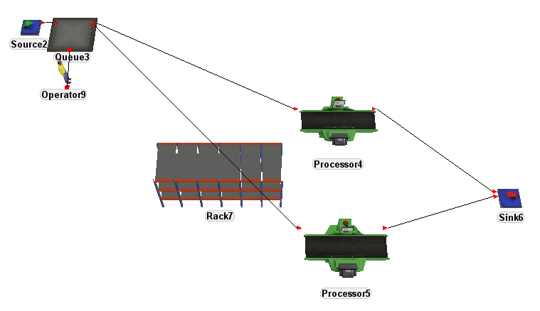
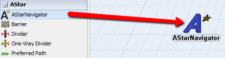
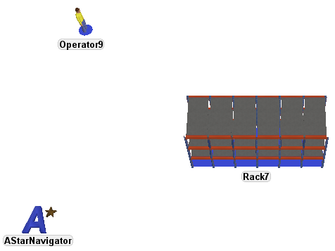
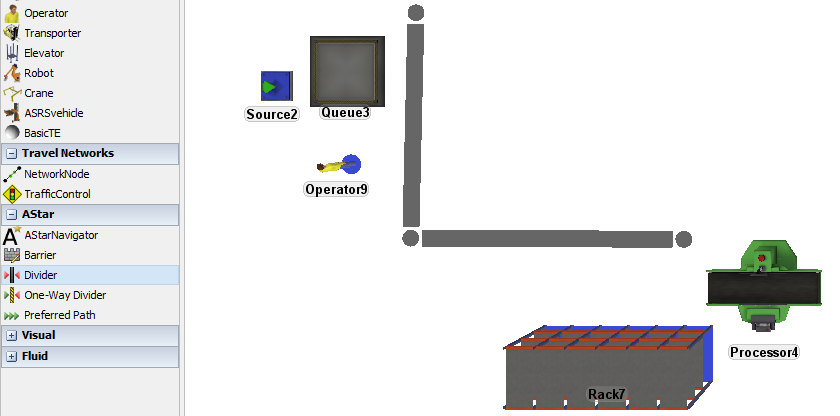
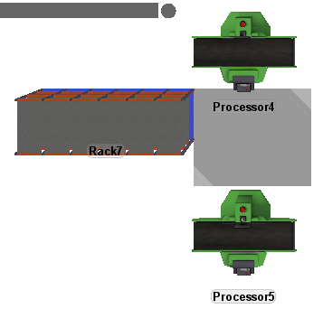
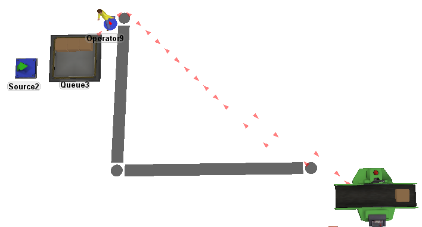
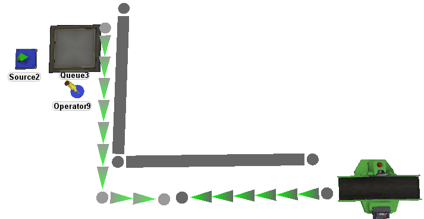
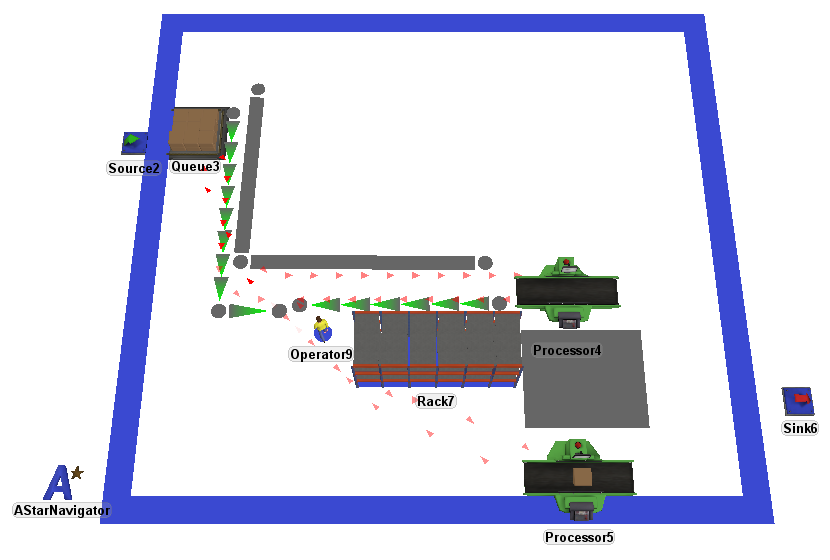
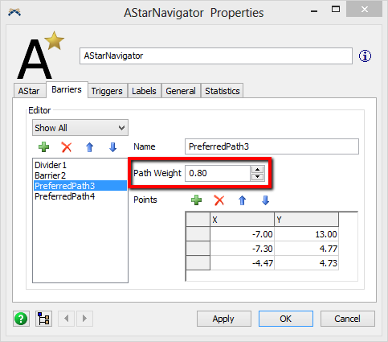

We'll use the following model to show how the A* Navigator can be used in a simple model. The real power of the A* Module is to layout very large and complex models that would require large network node layouts to handle all of the TaskExecuters.
First, an AStarNavigator object must be added to the model. Only one AStarNavigator object is available per model.

In this model, there is only one TaskExecuter object, however, we also want to include the Rack as a barrier.

Along with the Rack, we will also create a couple of barriers to represent walls or obstacles that the operator cannot walk through.


You can now reset and run the model to see how the operator performs. Remember, if you make any changes to your barriers the model must be reset before running.

Notice that the operator found that the shortest path is to move up and over our divider. Though there are multiple ways to alter the operator's path (for instance making the divider extend out further) we will modify the operator's path through a Preferred Path.
Preferred paths are not 'set' paths, rather they give the nodes associated with the preferred path a greater weight in the search algorithm. This will in affect, pull the operator toward the preferred path.

Reset and run the model.

If your operator continues to move up and over the divider, you can either move the preferred path or you can change the preferred path weight in the AStarNavigator object's properties window.

Results of your model may vary from this example as placement of barriers and objects will make a difference in the calculated paths of the operator.